| Bottom | homepage | Why Indeed | Billiard Balls |
|
|
The Star Wars Beam Weapons
and
Star Wars Directed-Energy Weapons (DEW)
(A focus of the Star Wars Program)
by
Dr. Judy Wood and Dr. Morgan Reynolds
(originally posted: October 17, 2006)
Page 6: Other
|
At the time this article was being developed, many people expressed disbelief that energy weapons existed outside of science fiction until they were reminded of the Star Wars Program, also known as the Strategic Defense Initiative (SDI)*. The name of this article was chosen as a reminder that energy weapons do exist and have been developed over 100 years. Most of this technology is classified information. It can also be assumed that such technology exists in multiple countries. The purpose of this article was to begin to identify the evidence of what happened on 9/11/01 that must be accounted for. In doing so, the evidence ruled out a Kinetic Energy Device (bombs, missiles, etc.) as the method of destruction as well as a gravity-driven "collapse."
*SDI was created by U.S. President Ronald Reagan on March 23, 1983.1 It is thought that SDI may have been first dubbed "Star Wars" by opponent Dr. Carol Rosin, a consultant and former spokeswoman for Wernher von Braun. However, Missile Defense Agency (MDA) historians attribute the term to a Washington Post article published March 24, 1983, the day after the Star Wars speech, which quoted Democratic Senator Ted Kennedy describing the proposal as "reckless Star Wars schemes."2 Before it was named the "Star Wars Program (SDI) in 1983, it was the Advanced Space Programs Development.3
12/12/10 -- Dr. Judy Wood
|
| 1Strategic Defense Initiative, Wikipedia, 2Sharon Watkins Lang. SMDC/ASTRAT Historical Office. "Where Do We Get Star Wars?", The Eagle. March 2007. 3 Robert M. Bowman, former Director of Advanced Space Programs Development for the U.S. Air Force in the Ford and Carter administrations. |
This page last updated, December 15, 2006
|
Shortcuts: Jump to: IX. Bankers Trust Jump to: X. Planes Ordered to Land Jump to: XI. Explosions Jump to: XII. WTC7 versus the Twin Towers Jump to: Traditional CD doesn't do this |
Audio:
29 November 2006, Judy Wood narrates these pages web pages on |
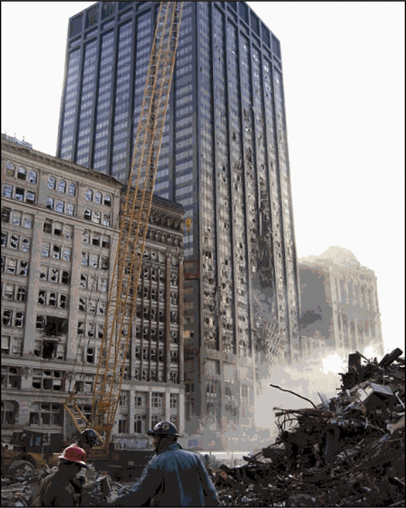 |
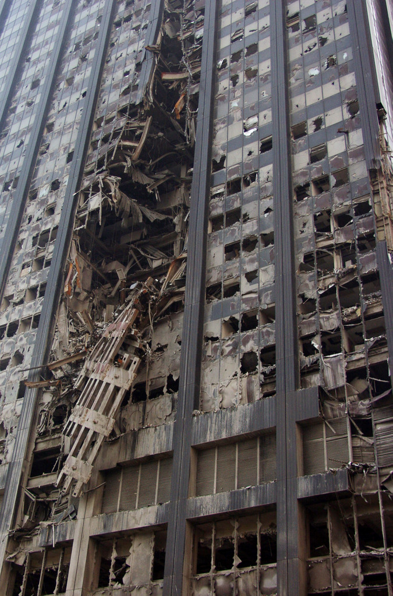 |
| Figure 71. Bankers Trust Building on Liberty Street, across from WTC2. (FEMA picture) |
 |
|
Figure 72. From FEMA report: (Fig6-10.) Why is this beam shriveled up? This seems to be a common theme. [Link(pdf)] (archived) |
| Figure 73. Timeline of events |
[The timeline info to be moved to an Appendix-1]
| (9:26 a.m.): Rookie FAA Manager Bans All Take Offs Nationwide, Including Most Military Flights? Mineta Asserts He Issues Order Minutes Later |
| 9:30 a.m.: United Flights Are Instructed to Land Immediately; American Follows Suit |
| (9:45 a.m.): Senior FAA Manager, on His First Day on the Job, Orders All Planes Out of the Sky Nationwide |
| (After 9:55 a.m.): Langley Fighters Receive Vague Order to Protect White House |
| 10:31 a.m.: Military and Law Enforcement Flights Resume |
| 10:31 a.m.: NEADS Does Not Pass Along NORAD Shootdown Order |
| Figure 82. Getting it started |
squibs
| Figure 83. Decoy squibs? |
 |
 |
|
|
Figure 84(a). Scooping up the building. |
Figure 84(b). |
 |
||
| Figure 85(a). | Figure 85(b) Traditional CD doesn't do this. | Figure 85(c). |
 |
||
| Figure 86(a). |
Figure 86(b). |
Figure 86(c). |
Rubble "pile"?
 |
 |
|
Figure 87(d). On the afternoon of 9/11/01 the "rubble pile" left from WTC1 is essentially non-existent. WTC7 can be seen in the distance, revealing the photo was taken before 5:20 PM that day. |
Figure 87(e). The "rubble pile" from WTC1 is essentially non-existent. The ambulance is parked at ground level in front of WTC1. WTC6, which had been an eight-story building, towers over the remains of WTC1. |
|
Figure 88(a). WTC6 from across Vesey street. WTC6 is an eight-story building and it dwarfs the rubble pile of WTC1. |
Figure 88(b). You can see the remains of WTC1 on the other side of WTC6. (WTC6 is in the foreground.) The amount of rust on beams adjacent to the hole in WTC6 is impressive. |
 |
||
| Figure 89(a). | Figure 89(b). |
Figure 89(c). |
Camelot! (Camelot is where it only rains at night and the leaves all fall into neat little piles.)
| Figure 90. WTC7. An excellent job, for sure! No parts spattered on adjacent buildings. |
| Figure 91. WTC7 left a bigger pile than either WTC1 or WTC2. Note how small the people are relative to the "pile." | Figure 92. WTC7 was not completely pulverized. Note the wall-board that remained on the surface. |
Clearly WTC7 was not taken down by conventional CD. We are noting that the destruction of WTC7 was different than WTC1 and WTC2. But, what happened to WTC7 is beyond the scope of this article.
Conventional CD doesn't totally pulverize buildings
 |
|
| Figure 93(a). Indy's Market Square Arena goes out in clouds of smoke, collapsed in less than 15 seconds. The blast was heard up to 25 miles away. Monday, July 09, 2001 |
Figure 93(b). What remains of the Kingdome |
|
Figure 94. This file cabinet "probably survived because it was in the basement." Click on picture for video (courtesy of thewebfairy.com). |
|
(a) source
|
(b) source
|
 |
|
|
(c) source
|
(d) source
|
| Figure 95. Note the print on these compressed pieces of paper. | |
{kind=link}
{kind=link}
{kind=link}
{kind=link}
|
WORLD TRADE CENTER TASK FORCE INTERVIEW EMT PATRICIA ONDROVIC Interview Date: October 1, 2001 I guess that's North Park. It's a big green, grassy area, and there's nothing there. As I was running up here, two or three more cars exploded on me. They weren't near any buildings at that point, they were just parked on the street. The traffic guys hadn't gotten a chance to tow anything yet, cause this was all during the first hour I guess of this thing happening. So there were still cars parked on the street that were completely independent of that. Three cars blew up on me, stuff was being thrown. I went home all bruised that day. Thank God it was only bruises. I just ran into this park along with a bunch of other people, and stuff was still blowing up, I don't think I looked back, but you couldn't see anything, everything was just black. I was running and I was falling over people, cause people were crawling on the ground cause they couldn't see anymore. I just kept on running north. I could smell water, so I just kept on running towards the water, cause I knew that my coat was on fire, and I figured well, if I can see a boat over the water, I'm just gonna jump onto the boat and take that thing to Jersey, cause no one wants to blow up Jersey. Stuff is still blowing up behind me, as I'm running. I can hear stuff exploding. I could hear rumbling, the street under me was moving like I was in an earthquake. I've been in those, so I know what they feel like. It felt like an earthquake. There was no where safe to go. As I was running north in this park, and then I could start seeing again a little bit, and I just kept looking in the sky. Cause the captain was saying there's another plane heading in our direction, I was looking for another plane. I saw something in the sky, it was a plane, but it was way out. It looked like it was over Jersey or something, then it wasn't there anymore. I saw a small fireball, and it was gone. I saw two other planes. One came in one way, and the other came in the other way, and there was a plane in the middle that was way far off in the distance. Then the plane in the middle just disappeared into a little fire ball. It looked like the size of a golf ball from where I could see it. And the other two planes veered off into opposite directions. I just kept on running north. About fifteen blocks later, I had no idea that that was just the first tower that had come down. |
||
|
||
|
|
FIREFIGHTER FERNANDO CAMACHO WTC2 Explosions We went across the lobby of the hotel, going north, and we exited and made a right going towards the second tower, the south tower. We must have walked about 100-200 feet to revolving doors, which led into a hallway to where the mall was. I could see maybe 20, civilians and I believe Ladder 25, which was about another 100 to 150 feet ahead of us. As we came in through the revolving doors, the lights went out. A second or two later everything started to shake. You could hear explosions. We didn't know what it was. We thought it was just a small collapse. As I looked straight ahead of me, I saw total darkness. Everything was coming our way like a wave. The firefighters that were ahead of us and the civilians that were ahead of us totally disappeared. We turned around. We were all pretty much within ten feet of each other: lieutenant, chauffeur, roof, OV, can. As we turned around, I ran probably maybe ten feet and that's when the body of the building or body of the collapse hit, and we were flying through the air basically. I must have flown 30, 40 feet through the air. Then total quiet. You couldn't breathe. You couldn't see anything. |
||
| http://www.flcv.com/firemen.html | ||
|
How'd "they" do it?
==>> What was the order of events and what were the events?
- Order
Here it is:
1. WTC5 (? )
In the Rick Seigel film, 911eyewitness, a broad and diffuse puff of "smoke" is seen rising from "near the base" of WTC2, shortly before it goes "poof." Could "they" have been warming up the gizmo, giving it the final "proof of concept" test drive, using WTC5?
2a. WTC2
2b. WTC3 (the first part)
2c. WTC4
3a. WTC1
3b. WTC3 (finishing the job)
3c. WTC5 (the holes appeared during the destruction of WTC1)
3d. WTC6 (the whole job?, the holes appeared during the destruction of WTC1)
4. WTC7 (the encore presentation)
|
Figure 74(a). Was the top deliberately tipped over? Note the diagonal shearing of the building, ending at the upper right edge (upper blue arrow) where it detonates as the building tips. In the video, there is a large chunk of "wheatchex" that is left standing, momentarily. The appearance is rather odd and warrants further study. Another tipping video. (Note how good this face looks in this photo above compared to the photos Jones uses of this same face that were to have been taken before this photo was taken.) |
In the above video, it can be seen that the initial detonations on the left side are all along the floor that is pointed out by the red arrow. I would expect that the floors which align with the lower blue arrow (on the right)
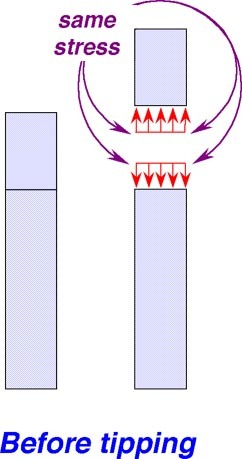 |
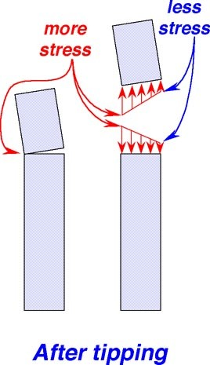 |
|
| Figure 74(b). | Figure 74(c). | |
| With less stress (upper right arrow of Figure 74(a)), why is it failing and why is it exploding? | ||
A few years ago, I thought this was equivalent to, "oops, we got the wires crossed." And, I thought it was an excellent "save." But now, from the above videos, it is fairly clear that a "save" could not be orchestrated within the time in which this event took place. It must have been planned this way! But, why?
 |
 |
|
| Figure 74(d). Demolition starts bad: the top 300 feet of WTC 2 tilted as much as 23° before being Blown to Kingdom Come. | Figure 74(e). No one had ever attempted to demolish a building nearly the size of a twin tower, and smoke from WTC 1 helped to distract and cover up problems in destroying WTC 2. | Figure 74(e). Source |
WTC2 "fell" first and the top tipped first, before it "fell." Why?
It appears that this was done to minimize damage. Note the following diagrams.
 |
||
| Figure 75(a). Error zone for WTC1 (mouse over to remove error zone) |
Figure 75(b). Satellite Photo (mouse over for building names) |
Figure 75(c). Error zone for WTC2 (mouse over to remove error zone) |
Map adopted from http://www.debunk911myths.org/
{kind=link}
Realizing this is the first time a quarter-mile high building has been destroyed in this manor, the "easiest" approach is desired in the event of a learning curve.
Considering Figure 75(a), if WTC1 is destroyed first, it would be good to stay away from WTC2 (purple zones right and down, Figure 75(a)) to avoid complicating the situation for the subsequent job. However, if WTC1 tips north, it risks damaging the Verizon building and WTC7. If WTC1 tips west, it risks damaging WFC2 and WFC3.
Considering Figure 75(c), if WTC2 is destroyed first, it would be good to stay away from WTC1 (purple zones left and up) to avoid complicating the situation for the subsequent job. However, if WTC2 tips south, it risks damaging the Bankers Trust building. But if WTC2 tips east (to the right), it only risks damaging WTC4.
Because of its close proximity to WTC2, it can be assumed that WTC4 will be destroyed anyway (collateral damage)(green zone). Similarly, because of its close proximity to WTC1, it can be assumed that WTC6 will be destroyed anyway (collateral damage)(green zone). So, to minimize damage, the optimum choice would be to destroy WTC2, first, while tipping the top portion to the east. If that tip of WTC2 is "Blown to Kingdom Come," the remaining portion of the building may be more manageable.
How much to tip
If the top portion of WTC2 is allowed to tip to the east (where it can be destroyed), the remaining portion of the building is a shorter, more manageable, size. So, if one were to pick the level at which the building would be "hit," the choice would be based on the maximum that would fall within the error zone ("spill-over zone" ). For WTC2, the error zone (or spill-over zone) was much larger than for WTC1 (see above).
| Figure 76. If WTC2 fell on it and squashed the main building, where is the part of WTC2 that did this? |
| Figure 77(a). Near the corner of Church and Liberty immediately after the event. | Figure 77(b). Near the corner of Church and Liberty shortly after the event. |
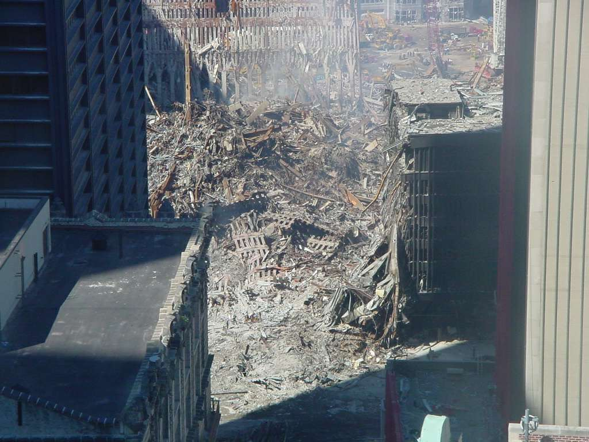 |
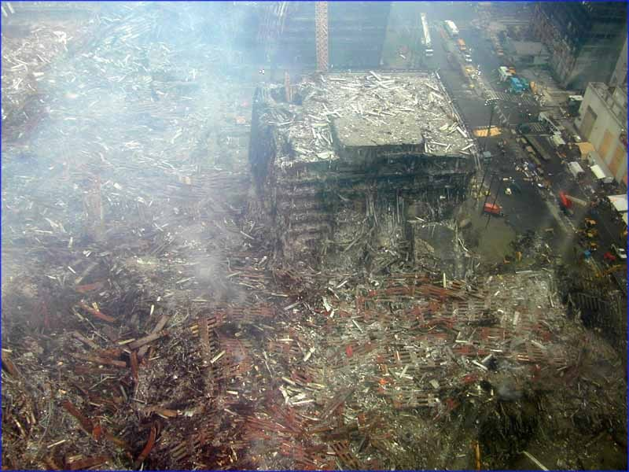 |
| Figure 78(a). | Figure 78(b). |
| Figure 78. How can WTC2 falling on WTC4 pulverize both? It's unbelievable what a clean cut there is, separating WTC4's north wing. If WTC2 slammed into WTC4 with enough force to pulverize both, it certainly would have produced an equivalent earthquake much greater than that of the Seattle Kingdome. | |
{kind=link}
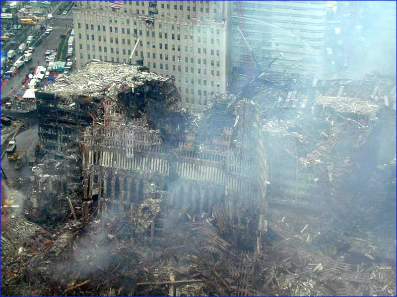 |
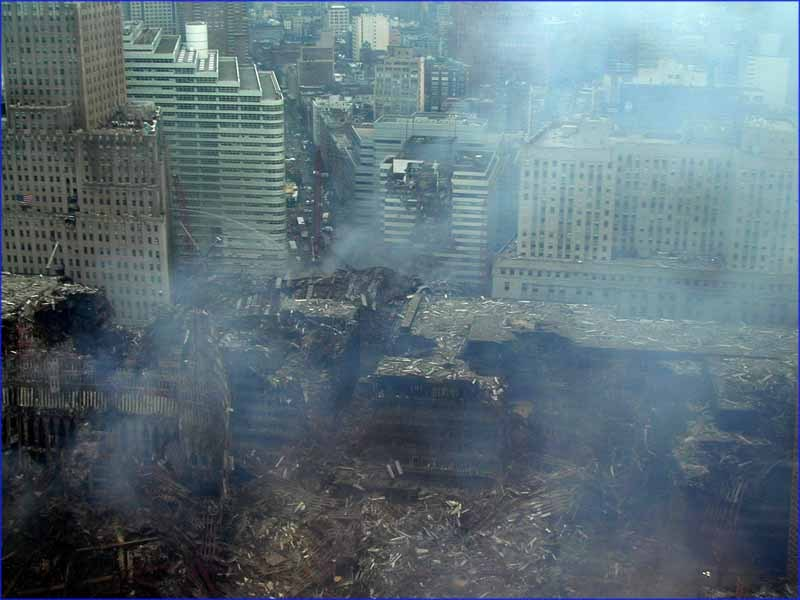 |
| Figure 79(a). | Figure 79(b). |
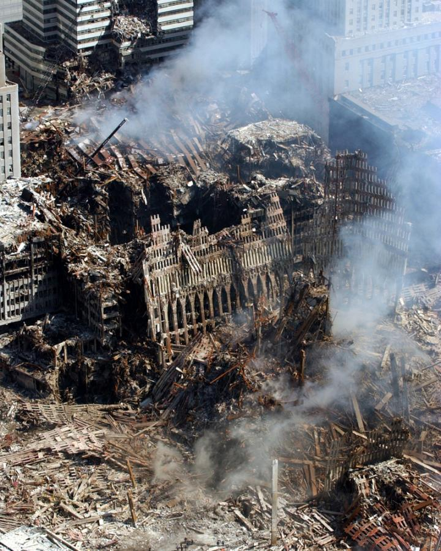 |
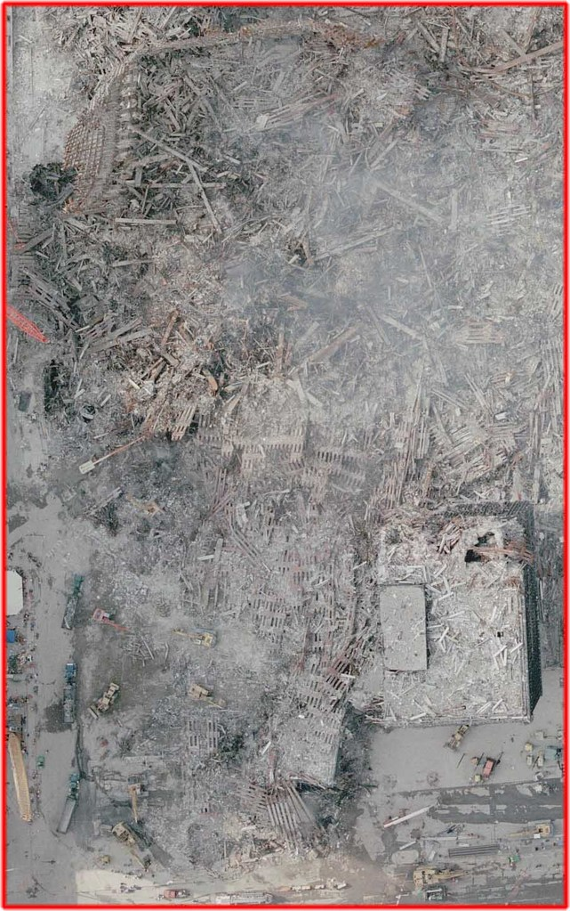 |
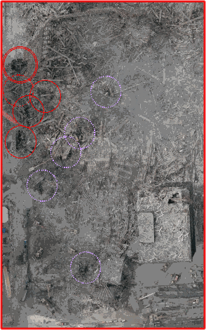 The red circles show regions where there are holes into the sub-basements. The purple circles show regions of probable holes. |
| Figure 80(a). | Figure 80(b). Hole in the street picture | |
| Figure 80(c). Holes |
| Figure 81. These look like healthy beams, not damaged/failed beams. These folks are suspended only a few stories above the ground. (little to no rubble pile below them) |
Continue to next page.
| Top | homepage | Why Indeed | Billiard Balls |
|
|
|